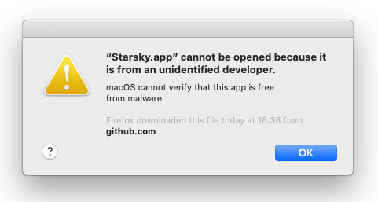

Starsky App
List of Starsky Projects
- starsky (sln) database photo index & import index project)
- starsky web api application / interface
- clientapp react front-end application
- starskyImporterCli import command line interface
- starskyGeoCli gpx sync and reverse 'geo tagging'
- starskyWebHtmlCli publish web images to a content package
- starskyWebFtpCli copy a content package to a ftp service
- starskyAdminCli manage user accounts
- starskySynchronizeCli check if disk changes are updated in the database
- starskyThumbnailCli speed web performance by generating smaller images
- Starsky Business Logic business logic libraries (netstandard 2.0)
- starskyTest mstest unit tests
- starsky web api application / interface
- starsky.netframework Client for older machines (deprecated)
- starsky-tools nodejs tools to add-on tasks
- starskyapp Desktop Application (Pre-alpha code)
- Changelog Release notes and history
Usage instructions
There are binaries available through Github Releases
Windows 7 and newer
- Go to Github Releases and click on
starsky-win-desktop.zip
Mac OS 10.12 or newer
- Go to Github Releases and click on
starsky-mac-desktop.zip
The following versions are available:

The application bundle can run without installer
Gatekeeper
Since we don't have certificates from Apple, users are warned. If you don't trust it, the code is public and its instructions for building it
When you see the following warning:

Open app without Gatekeeper
- From the Apple menu, open the "System Preferences" application.
- Click on Security & Privacy > General tab.
- Look at 'Allow apps downloaded from' and click button 'Open Anyway'
Remote mode
Use the settings menu to update the server settings
Click on 'Settings' > 'Settings' to get the following menu

Cache
The Electron stores it's cache in these folders:
Windows:
C:\Users\<user>\AppData\Roaming\starsky\CacheLinux:
~/.config/starsky/CacheOS X:
~/Library/Application\ Support/starsky/CacheBuild instructions
The following steps are needed to compile the desktop application
Install Node packages
npm ciBuilding Starsky as dependency first
For Windows
We assume that you run on a 64 bits windows version
When running bash
../starsky/build.sh --Runtime=win7-x64For Windows there is a bundle created: starsky/starsky-win7-x64.zip and this is coppied to the desktop application
For Mac OS
When running bash
../starsky/build.sh --Runtime=osx.10.12-x64For Mac OS there is a bundle created: starsky/starsky-osx.10.12-x64.zip and this is coppied to the desktop application
Build Electron
For Windows
We assume that you run on a 64 bits windows version
When running bash
npm run windowsFor Mac OS
When running bash
npm run mac